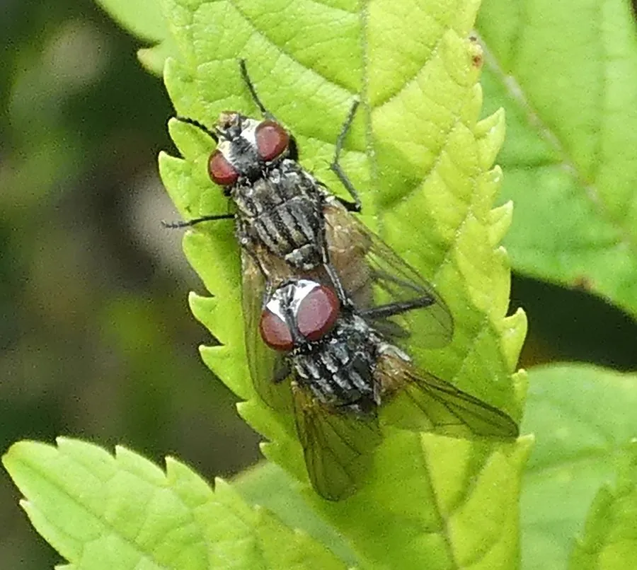

昆虫 · 动物界
家蝇 Musca domestica

与人类共生的常见蝇类，在垃圾与食物间穿梭取食，可机械传播多种肠道传染病，是重要的卫生害虫。
- 分类
- 门节肢动物门纲昆虫纲目双翅目科蝇科属蝇属
- 栖息环境
- 人类居住区、垃圾堆、畜禽舍与厨房附近
- 地理分布
- 全球各地，与人类活动密切伴生
- 保护级别
- 暂无评估
物种志
家蝇成虫体长约 5–8 mm，体灰色，胸部背面有 4 条黑色纵纹，复眼大，视野几乎覆盖四周；口器为舐吸式，足末端有爪垫，能在光滑的玻璃和天花板上行走。
家蝇杂食，取食腐肉、粪便、垃圾和人类食物，进食时不断吐出消化液并频繁排泄，因此很容易污染食物。一只家蝇身上可携带数以百万计的细菌，可机械传播痢疾、伤寒、霍乱等肠道传染病。雌蝇一生产卵 5–6 批，每批数十至上百枚，卵在一天内孵化，幼虫（蛆）在有机物中生长，夏季约 2 周即可完成一代。家蝇全球分布，与人类活动密切伴生，防治需做好垃圾封闭处理、安装纱窗，并轮换使用杀虫剂以延缓抗药性。
形态与习性
- 食性杂食，取食腐肉、粪便、垃圾与人类食物
- 体长约 5–8 mm
- 生活史卵—蛆—蛹—成虫，夏季约 2 周完成一代
- 繁殖雌蝇一生产卵 5–6 批，每批数十至上百枚
- 传病机械携带痢疾、伤寒、霍乱等病原体
- 防治垃圾封闭处理、纱窗防蝇与杀虫剂轮换
趣味知识
- 家蝇吃东西时会不断吐出消化液，并频繁排泄，因此很容易污染食物。
- 一只家蝇身上可携带数以百万计的细菌。
- 家蝇的复眼由约 4000 个小眼组成，视野几乎覆盖四周。
生态关系
- 捕食 ← 大腹园蛛 结网捕食飞虫